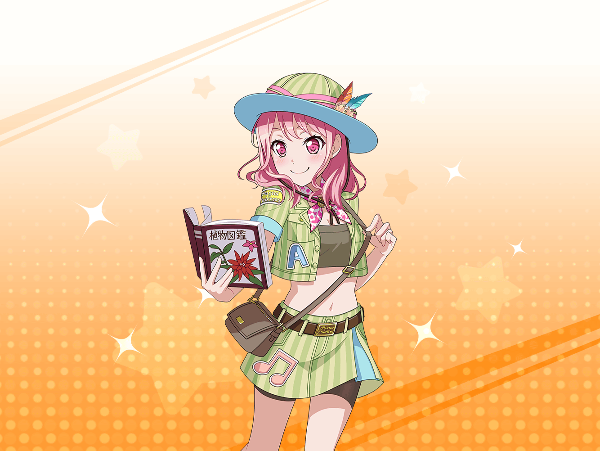

CiRCLE 受付
彩
あ、{{userName}}さん、おはようございます……
彩
いえ、具合が悪いとかではないんです。
ただちょっと、この間の無人島ロケを思い出して、
少しヘコんじゃって……
彩
あ、収録自体はとっても楽しかったですよ！
彩
それに、テレビで放送を観た時も
自分が出てる～！ ってすっごくテンション上がりましたし！
彩
でも……
彩
後で勉強のために見直してみたら、
私……最後の絶叫以外、
ほとんど何もしてなかったんです！
彩
それに気づいてちょっとヘコんでます……
彩
みんなは、すっごく頑張ってくれてて！
麻弥ちゃんは、ミッションを達成するために
色々なアイディアを出してくれたし！
彩
日菜ちゃんやイヴちゃんは、天真爛漫で
見てるだけで、みんなが楽しくなるし、
千聖ちゃんは、すごく頼りがいがあるし……
彩
そうやって考えると、
私には何があるのかなー、って
ちょっと考えちゃったりして……
彩
……ってすみません！
なんだか愚痴ったりしちゃって！
彩
え……？ そうなんですかね？
私なりの魅力かぁ……
彩
私は、目標にしてるアイドルみたいになりたいって、
いつも目の前のことで精一杯で……
彩
なんか余裕？ みたいなものが、
全然ないなー、って思っちゃいます
彩
えへへ、そうですかね……？
私が頑張ってることで、元気をもらえる人がいるっていうのは、
考えてなかったかもです……
彩
{{userName}}さんも、元気になるんですか？
えへへ、そう言ってもらえると嬉しいですね！
彩
わかりました！
なら、これからもみんなに元気を与えられるように頑張ります！
彩
お話聞いてくれてありがとうございます！
……あ！ もう練習始まっちゃう！ 失礼しますね！
彩
……っと、ごめんなさい！
１つだけお願いしてもいいですか？
彩
もしよかったら……またこうやって
お話、聞いてもらえたりしたら嬉しいなって……
彩
えへへ、ありがとうございます！
これからも、よろしくお願いしますね！